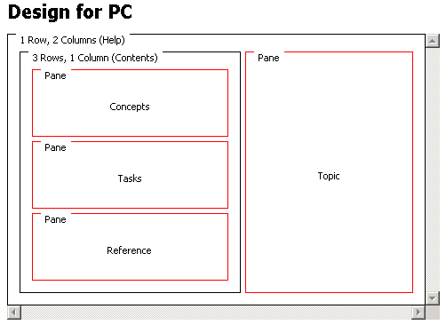

A canvas is an layout area where you can position formatting objects and associate them with elements in your web content. On a PC, MCS delivers a canvas as a single web page. On smaller devices, MCS sends complex canvasses as sets of pages.
The figure shows a canvas layout, designed to display help text on a PC , as it appears in the Design page of the Layout editor.
An outer grid consists of two columns. The left column contains a another grid with three panes for sections in a table of contents, and the right column contains a single pane for topics.
MCS displays the content in individual panes. Since there are four panes, and four places where content can be displayed, each pane has a unique name within the layout. In the content, you use the pane names to specify where output from XDIME elements appears.

You assign attributes to each format, including every pane. These attributes determine the formatting that is applied as the page is generated. For example, you might decide to center the layout of each of the table of contents panes and left align the Topic content.
MCS flows content in normal panes, so headings and paragraphs, and lists will format on the page as you expect.
When you add a pane and name it, you are creating a target for part of the content. You use the name of the pane in the XDIME on the web page to map content to the pane. In the example a paragraph is mapped to the pane named Topic using the pane attribute.
<p pane="Topic"> The Multi-Channel Server (MCS) helps you manage the complexity of delivering a wide variety of content to PCs, PDAs, mobile phones, interactive digital TV, internet appliances, games consoles, VoiceXML and interactive kiosks. </p>
Related information
About layouts
Fragments
Form fragments
Iterator panes
Dissecting panes